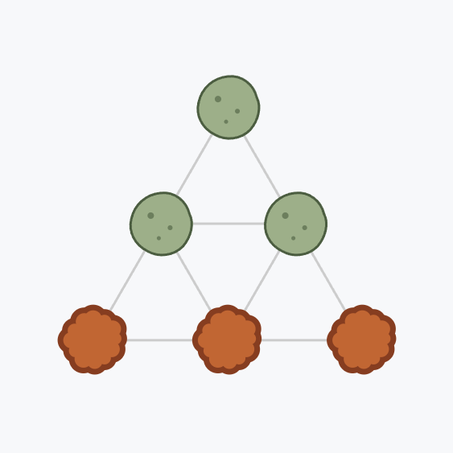

Rezultati
Strategija
Velikost n
| Strategija | n | Levi | Koraki |
|---|
Čas iskanja po strategijah

Levi in kontaminacija je problem zasledovanja in izogibanja na grafih. Na začetku so vsa vozlišča grafa kontaminirana, razen tistih, ki jih zasedajo levi. V vsakem koraku se levi premaknejo po povezavah grafa in očistijo vozlišča, na katera stopijo. Hkrati se kontaminacija razširi z vsakega kontaminiranega vozlišča na vsa sosednja neočiščena vozlišča, z izjemo tistih, na katerih stoji lev, in tistih, do katerih bi se širila po povezavi, čez katero je v istem koraku prešel lev. V sklopu diplomske naloge raziskujem vprašanje: najmanj koliko levov potrebujemo, da popolnoma očistimo dani graf, neodvisno od izhodišča?
Spodaj je prikazana animacija obeh modelov na trikotniku P3 s tremi levi. Pri vljudnemu modelu se v vsakem koraku premakne natanko en lev; pri kofeiniranem pa se morajo premakniti vsi levi hkrati, kar lahko sproži ponovno kontaminacijo prej očiščenih vozlišč. Spodaj prikazan vljuden model je prav tako monoton, saj se očiščena vozlišča ne kontaminirajo ponovno, medtem ko kofeinirani model ni monoton, saj se vozlišče 2 v 3. koraku ponovno kontaminira.

Aplikacija obravnava štiri oblike grafov, ki vsi uporabljajo identično trikotniško topologijo sosedov (vsako notranje vozlišče ima 6 sosedov: levo/desno + štiri diagonale):
final_solutions/times.json).Glavni referenci:
| Strategija | n | Levi | Koraki |
|---|